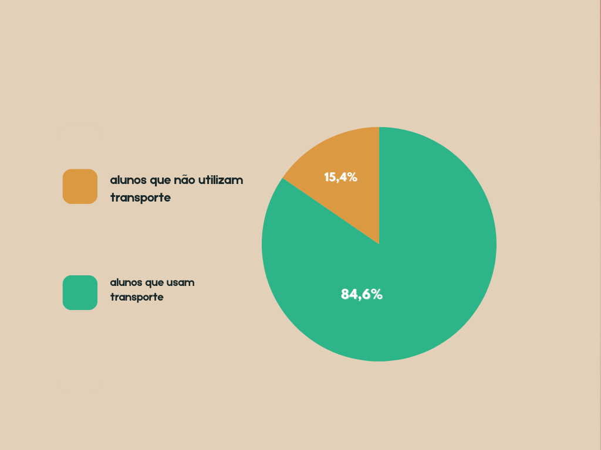

Em minha escola tem 64 alunos, aproximadamente 84.6% dos alunos utilizam do transporte escolar que é disponibilizado
gratuitamente para vir até a escola, e os outros 15.4% se deslocam a pé para vir a escola.

acima vemos o gráfico n0 formato de pizza, mostrando alguns dados.